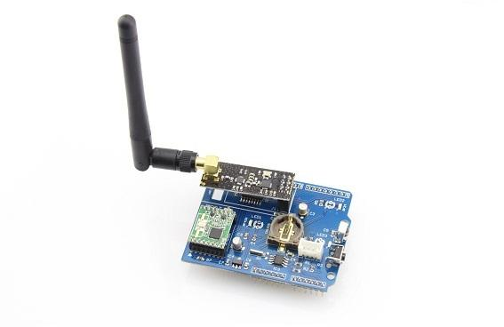
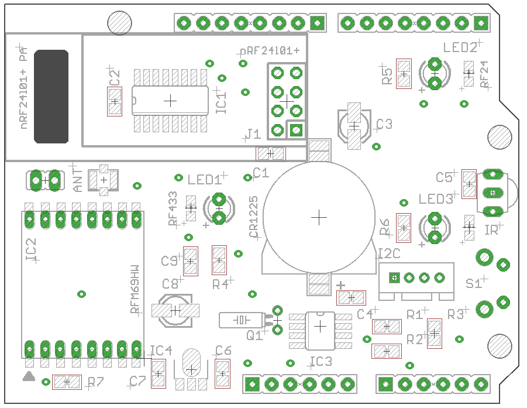
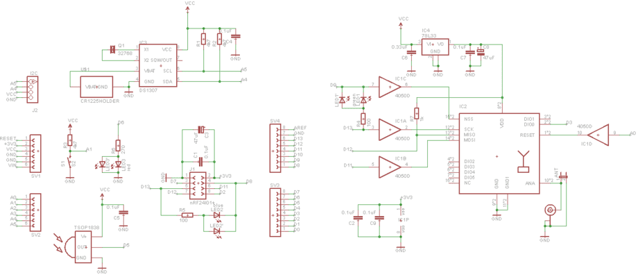

WireLess Gate Shield is an Arduino-compatible expansion card designed to build a system of receiving / transmitting and broadcasting various wireless commands and data. For maximum coverage possible wireless communication interfaces on the board has an IR receiver interface for connecting popular transceiver nRF24L01 + and RFM69HW. Additionally, the board has a real time clock module DS1307.
Model: 113990088


On the left side WireLess Gate Shield are interfaces to wireless modules:
Between wireless modules is U.FL connector for external antenna for RFM69HW. If you plan to use the regular antenna (bit of wire required length) - it is possible to solder directly to the board Schild (near the connector U.FL)
To the right and slightly above the module is RFM69HW LED LED1 "RF433"
In the central part of the board is a slot for a backup battery for clock module DS1307
To the right and slightly below the slot for the battery - I2C-connector.
On the right side is (top-down):

In the basic version (without the use of Ethernet Shield) may organize a wireless gateway between the radios and the IR receiver.
Command (or data) can be broadcast between all three wireless interfaces according to the logic of that program the user.
Availability of real-time clock module will automate the sending of any data or commands with reference to the date / time.
Device Management can be organized using a button located on the Shield.
Additionally WireLess Gate Shield can connect any i2c device using Grove-compatible connections (sensors, displays, etc.).
WireLess Gate Shield was designed to be fully compatible with Ethernet Shield - so you can use these two together Schild to create even more advanced wireless control device (logging on SD-card and presenting data on a web page, manage wireless devices via the web).
Both wireless module RFM69HW and nRF24l01 + connected hardware bus SPI.
Selection of a particular wireless module is a low potential for the establishment of the appropriate chip select pin:
'Warning', 'If you have installed, but the software is not involved RFM69HW, be sure to install NSS pin of this module in state HIGH (otherwise it will interfere with the normal operation nRF24l01 + and Ethernet Shield.
LED indication of the wireless module is implemented as follows:
When radios are not active - at the appropriate pines chip select (CSN and NSS) there is a high potential, with the appearance of the clock at pin SCK does not lead to the ignition of the LEDs. If the same MK "communicates" with any wireless module to select it at the appropriate Pina (CSN and NSS) is set low potential and at the same timing pulses at pin SCK "ignite" the corresponding LED.
Thus, the user is not required to arrange for any additional programming work on the MC to indicate operation of the module.
If necessary, SMD-LED to replace the usual outs (eg to embed the finished device in a cute case with display):
Custom LED can be replaced by LED3 pin IR LED and thereby further expand the use of WireLess Gate Shield (for example, a command sent via any wireless interface or LAN - control devices using infrared commands).
To use the WireLess Gate Shield requires the following libraries:
Additionally required libraries that are used when working RF24 and LCD-display:
Libraries are examples of them just to understand how they work.
Module Initialization nRF24l01 + as follows:
... //RF24 radio(CE,CSN); RF24 radio(7,8); ...
To work with a wireless module RFM69HW need to make minor corrections to the file RFM69.h follows:
At the beginning of the file to find the line:
#define SPI_CS SS // SS is the SPI slave select pin, for instance D10 on atmega328 #define RF69_IRQ_PIN 2 // INT0 on AVRs should be connected to DIO0 (ex on Atmega328 it's D2)
And replace them with:
//#define SPI_CS SS // SS is the SPI slave select pin, for instance D10 on atmega328 //#define RF69_IRQ_PIN 2 // INT0 on AVRs should be connected to DIO0 (ex on Atmega328 it's D2) #define SPI_CS 9 // SS is the SPI slave select pin, for WireLess Gate Shield - D9 #define RF69_IRQ_PIN 3 // INT1 on AVRs should be connected to DIO0 (ex on Atmega328 it's D3)
Additionally, the file RFM69.cpp need to find the line:
void RFM69::isr0() { selfPointer->interruptHandler(); }
And replace them with:
//void RFM69::isr0() { selfPointer->interruptHandler(); }
void RFM69::isr1() { selfPointer->interruptHandler(); }
Module Initialization RFM69HW as follows:
... resetRFM69(); radio.setCS(9); // NSS - D9 radio.initialize(FREQUENCY,NODEID,NETWORKID); ...
'Note:' Working with RFM69HW determined by the state of its registers. For more tinctures for specific endpoints required by the rules in the file RFM69.cpp function RFM69 :: initialize To better understand the purpose registers read the file RFM69registers.h (also included in the library), and documentation radio RFM69HW
All results are displayed in the Serial Monitor
#include <RFM69.h> #include <SPI.h> #include "RF24.h" #include <IRremote.h> #include <Wire.h> #include "RTClib.h" RF24 radio24(7,8); RTC_DS1307 RTC; int RECV_PIN = 5; IRrecv irrecv(RECV_PIN); decode_results results; // create a framework for the transmission of values typedef struct{ int SensorID; // ID sensor int CommandTo; // command module number ... int Command; // command // 0 - answer // 1 - get the value // 2 - set the value int ParamID; // parameter identifier float ParamValue; // value boolean Status; // status // 0 - read-only (RO) // 1 - can change the (RW) char Comment[16]; // comment } Message; Message sensor; const uint64_t pipes[2] = { 0xF0F0F0F0E1LL, 0xF0F0F0F0D2LL }; volatile boolean waitRF24 = false; #define NODEID 99 #define NETWORKID 100 #define GATEWAYID 1 #define FREQUENCY RF69_433MHZ //Match this with the version of your Moteino! (others: RF69_433MHZ, RF69_868MHZ) #define KEY "thisIsEncryptKey" //has to be same 16 characters/bytes on all nodes, not more not less! #define LED 6 #define SERIAL_BAUD 115200 #define ACK_TIME 30 // # of ms to wait for an ack #define RFM69_RESET 14 //A0 #define RFM69_NSS 9 #define RFM69_DIO0 3 #define BUTTON 15 // A1 #define MOSI 11 #define MISO 12 #define SCK 13 int TRANSMITPERIOD = 500; //transmit a packet to gateway so often (in ms) byte sendSize=0; boolean requestACK = false; RFM69 radio; int delta=2000; unsigned long blinkStop; unsigned long timeReady; typedef struct { int nodeId; //store this nodeId unsigned long uptime; //uptime in ms float temp; //temperature maybe? } Payload; Payload theData; void setup() { Serial.begin(SERIAL_BAUD); pinMode(LED, OUTPUT); pinMode(RFM69_NSS, OUTPUT); pinMode(7, OUTPUT); pinMode(8, OUTPUT); pinMode(MOSI, OUTPUT); pinMode(MISO, INPUT); pinMode(SCK, OUTPUT); pinMode(RFM69_RESET, OUTPUT); pinMode(RFM69_DIO0, INPUT); pinMode(BUTTON, INPUT); digitalWrite(RFM69_NSS, HIGH); digitalWrite(7, HIGH); resetRFM69(); radio.setCS(RFM69_NSS); radio.initialize(FREQUENCY,NODEID,NETWORKID); //radio.setHighPower(); //uncomment only for RFM69HW! radio.encrypt(KEY); char buff[50]; sprintf(buff, "\nTransmitting at %d Mhz...", FREQUENCY==RF69_433MHZ ? 433 : FREQUENCY==RF69_868MHZ ? 868 : 915); Serial.println(buff); radio24.begin(); // optionally, increase the delay between retries & # of retries radio24.setRetries(15,15); radio24.setChannel(119); // по умолчанию СЛУШАЕМ radio24.openWritingPipe(pipes[1]); radio24.openReadingPipe(1,pipes[0]); radio24.startListening(); delay(20); attachInterrupt(0, isr_RF24, FALLING); irrecv.enableIRIn(); Wire.begin(); RTC.begin(); if (! RTC.isrunning()) { Serial.println("RTC is NOT running!"); // following line sets the RTC to the date & time this sketch was compiled RTC.adjust(DateTime(__DATE__, __TIME__)); } } long lastPeriod = -1; void loop() { //check for any received packets if (radio.receiveDone()) { Serial.print('['); Serial.print(radio.SENDERID, DEC); Serial.print("] "); for (byte i = 0; i < radio.DATALEN; i++) Serial.print((char)radio.DATA[i]); Serial.print(" [RX_RSSI:"); Serial.print(radio.readRSSI()); Serial.print("]"); if (radio.ACK_REQUESTED) { radio.sendACK(); Serial.print(" - ACK sent"); delay(10); } Serial.println(); } int currPeriod = millis()/TRANSMITPERIOD; if (currPeriod != lastPeriod) { //fill in the struct with new values theData.nodeId = NODEID; theData.uptime = millis(); theData.temp = radio.readTemperature();//91.23; //it's hot! Serial.print("Sending struct ("); Serial.print(sizeof(theData)); Serial.print(" bytes) ... "); if (radio.sendWithRetry(GATEWAYID, (const void*)(&theData), sizeof(theData))) Serial.print(" ok!"); else Serial.print(" nothing..."); Serial.println(); lastPeriod=currPeriod; } listenRF24(); if (irrecv.decode(&results)) { Serial.println(results.value, HEX); irrecv.resume(); // Receive the next value blinkStop=millis()+100; digitalWrite(LED, HIGH); } if (digitalRead(BUTTON)==LOW) { blinkStop=millis()+1000; digitalWrite(LED, HIGH); } if (millis()>blinkStop) { digitalWrite(LED, LOW); } if(millis()>timeReady){ timeReady=millis()+2000; DateTime now = RTC.now(); Serial.print(now.year(), DEC); Serial.print('/'); Serial.print(now.month(), DEC); Serial.print('/'); Serial.print(now.day(), DEC); Serial.print(' '); Serial.print(now.hour(), DEC); Serial.print(':'); Serial.print(now.minute(), DEC); Serial.print(':'); Serial.print(now.second(), DEC); Serial.println(); } } void Blink(byte PIN, int DELAY_MS) { pinMode(PIN, OUTPUT); digitalWrite(PIN,HIGH); delay(DELAY_MS); digitalWrite(PIN,LOW); } void resetRFM69(){ digitalWrite(RFM69_RESET, HIGH); delay(1); digitalWrite(RFM69_RESET, LOW); delay(10); } void isr_RF24(){ waitRF24 = true; } void listenRF24() { if (waitRF24) { waitRF24 = false; if ( radio24.available() ) { bool done = false; while (!done) { done = radio24.read( &sensor, sizeof(sensor) ); if(sensor.Command == 0) { Serial.print(sensor.SensorID); Serial.print(" "); Serial.print(sensor.ParamID); Serial.print(" "); Serial.print(sensor.ParamValue); Serial.print(" "); Serial.println(sensor.Comment); } } } } }
#include <RFM69.h> #include <SPI.h> #define NODEID 1 #define NETWORKID 100 #define FREQUENCY RF69_433MHZ //Match this with the version of your Moteino! (others: RF69_433MHZ, RF69_868MHZ) #define KEY "thisIsEncryptKey" //has to be same 16 characters/bytes on all nodes, not more not less! #define LED 6 #define SERIAL_BAUD 115200 #define ACK_TIME 30 // # of ms to wait for an ack #define RFM69_RESET 14 RFM69 radio; bool promiscuousMode = false; //set to 'true' to sniff all packets on the same network typedef struct { int nodeId; //store this nodeId unsigned long uptime; //uptime in ms float temp; //temperature maybe? } Payload; Payload theData; void setup() { Serial.begin(SERIAL_BAUD); pinMode(RFM69_RESET, OUTPUT); pinMode(3, INPUT); resetRFM69(); radio.setCS(9); //delay(10); radio.initialize(FREQUENCY,NODEID,NETWORKID); //radio.setHighPower(); //uncomment only for RFM69HW! radio.encrypt(KEY); radio.promiscuous(promiscuousMode); char buff[50]; sprintf(buff, "\nListening at %d Mhz...", FREQUENCY==RF69_433MHZ ? 433 : FREQUENCY==RF69_868MHZ ? 868 : 915); Serial.println(buff); } byte ackCount=0; void loop() { //process any serial input if (Serial.available() > 0) { char input = Serial.read(); if (input == 'r') //d=dump all register values radio.readAllRegs(); if (input == 'E') //E=enable encryption radio.encrypt(KEY); if (input == 'e') //e=disable encryption radio.encrypt(null); if (input == 'p') { promiscuousMode = !promiscuousMode; radio.promiscuous(promiscuousMode); Serial.print("Promiscuous mode ");Serial.println(promiscuousMode ? "on" : "off"); } if (input == 'd') //d=dump flash area { Serial.println("Flash content:"); int counter = 0; while(counter<=256){ //Serial.print(flash.readByte(counter++), HEX); Serial.print('.'); } //while(flash.busy()); Serial.println(); } if (input == 'D') { Serial.print("Deleting Flash chip content... "); //flash.chipErase(); //while(flash.busy()); Serial.println("DONE"); } if (input == 'i') { Serial.print("DeviceID: "); //word jedecid = flash.readDeviceId(); //Serial.println(jedecid, HEX); } } if (radio.receiveDone()) { Serial.print('[');Serial.print(radio.SENDERID, DEC);Serial.print("] "); Serial.print(" [RX_RSSI:");Serial.print(radio.readRSSI());Serial.print("]"); if (promiscuousMode) { Serial.print("to [");Serial.print(radio.TARGETID, DEC);Serial.print("] "); } if (radio.DATALEN != sizeof(Payload)) Serial.print("Invalid payload received, not matching Payload struct!"); else { theData = *(Payload*)radio.DATA; //assume radio.DATA actually contains our struct and not something else Serial.print(" nodeId="); Serial.print(theData.nodeId); Serial.print(" uptime="); Serial.print(theData.uptime); Serial.print(" temp="); Serial.print(theData.temp); } if (radio.ACK_REQUESTED) { byte theNodeID = radio.SENDERID; radio.sendACK(); Serial.print(" - ACK sent."); // When a node requests an ACK, respond to the ACK // and also send a packet requesting an ACK (every 3rd one only) // This way both TX/RX NODE functions are tested on 1 end at the GATEWAY if (ackCount++%3==0) { Serial.print(" Pinging node "); Serial.print(theNodeID); Serial.print(" - ACK..."); delay(3); //need this when sending right after reception .. ? if (radio.sendWithRetry(theNodeID, "ACK TEST", 8, 0)) // 0 = only 1 attempt, no retries Serial.print("ok!"); else Serial.print("nothing"); } } Serial.println(); Blink(LED,3); } } void Blink(byte PIN, int DELAY_MS) { pinMode(PIN, OUTPUT); digitalWrite(PIN,HIGH); delay(DELAY_MS); digitalWrite(PIN,LOW); } void resetRFM69(){ digitalWrite(RFM69_RESET, HIGH); delay(1); digitalWrite(RFM69_RESET, LOW); delay(10); }
| Revision | Description | Release |
| 0.9 | Prototype | 05.05.2014 |
| 1.0 | Public version | 05.07.2014 |
This product can be purchased:
China (shipping worldwide)
Elecrow store
Seeed store
Russia
Devicter store
{kind=link}